library(readr)
library(tidyverse)
library(tidymodels)
library(skimr)
library(ggplot2)
library(bonsai)Tidy Tuesday Exercise 2
This exercise is will use the TidyTuesday data for this week to perform cross-validation, model tuning and fitting, and model evaluation.
This exercise will be another use of the Tidy Tuesday data. We will be looking at US Egg Production. Cage-free hens and eggs will be compared to other table eggs in the US, looking at number of eggs produced, number of hens, and the percentage of cage-free eggs and hens. More information about the dataset can be found here.
Load packages
Load data
# load the data and assign to eggprod and cagefreeperct
eggprod <- readr::read_csv('https://raw.githubusercontent.com/rfordatascience/tidytuesday/master/data/2023/2023-04-11/egg-production.csv')
cagefreeperct <- readr::read_csv('https://raw.githubusercontent.com/rfordatascience/tidytuesday/master/data/2023/2023-04-11/cage-free-percentages.csv')Explore data
Let’s take a look at the data using skim()
skim(eggprod)| Name | eggprod |
| Number of rows | 220 |
| Number of columns | 6 |
| _______________________ | |
| Column type frequency: | |
| character | 3 |
| Date | 1 |
| numeric | 2 |
| ________________________ | |
| Group variables | None |
Variable type: character
| skim_variable | n_missing | complete_rate | min | max | empty | n_unique | whitespace |
|---|---|---|---|---|---|---|---|
| prod_type | 0 | 1 | 10 | 13 | 0 | 2 | 0 |
| prod_process | 0 | 1 | 3 | 23 | 0 | 3 | 0 |
| source | 0 | 1 | 23 | 23 | 0 | 108 | 0 |
Variable type: Date
| skim_variable | n_missing | complete_rate | min | max | median | n_unique |
|---|---|---|---|---|---|---|
| observed_month | 0 | 1 | 2016-07-31 | 2021-02-28 | 2018-11-15 | 56 |
Variable type: numeric
| skim_variable | n_missing | complete_rate | mean | sd | p0 | p25 | p50 | p75 | p100 | hist |
|---|---|---|---|---|---|---|---|---|---|---|
| n_hens | 0 | 1 | 110839873 | 124121204 | 13500000 | 17284500 | 59939500 | 125539250 | 341166000 | ▇▁▁▁▂ |
| n_eggs | 0 | 1 | 2606667580 | 3082457619 | 298074240 | 423962023 | 1154550000 | 2963010996 | 8601000000 | ▇▁▁▁▂ |
This data set has 6 variables: 3 character (product type, product process, and source), 1 date (month of observation as Y-M-D), and 2 numeric(number of hens and number of eggs). All columns are complete with no missing data. The observations are from 2016 to 2021. The mean number of hens in the US is 110,839,873 which produced 2,606,667,580 eggs on average. That is a lot of eggs to gather!
skim(cagefreeperct)| Name | cagefreeperct |
| Number of rows | 96 |
| Number of columns | 4 |
| _______________________ | |
| Column type frequency: | |
| character | 1 |
| Date | 1 |
| numeric | 2 |
| ________________________ | |
| Group variables | None |
Variable type: character
| skim_variable | n_missing | complete_rate | min | max | empty | n_unique | whitespace |
|---|---|---|---|---|---|---|---|
| source | 0 | 1 | 8 | 35 | 0 | 31 | 0 |
Variable type: Date
| skim_variable | n_missing | complete_rate | min | max | median | n_unique |
|---|---|---|---|---|---|---|
| observed_month | 0 | 1 | 2007-12-31 | 2021-02-28 | 2018-11-15 | 91 |
Variable type: numeric
| skim_variable | n_missing | complete_rate | mean | sd | p0 | p25 | p50 | p75 | p100 | hist |
|---|---|---|---|---|---|---|---|---|---|---|
| percent_hens | 0 | 1.00 | 17.95 | 6.58 | 3.20 | 13.46 | 17.30 | 23.46 | 29.20 | ▂▅▇▆▆ |
| percent_eggs | 42 | 0.56 | 17.10 | 4.29 | 9.56 | 14.52 | 16.23 | 19.46 | 24.55 | ▆▇▇▆▇ |
This dataset has 4 columns: 1 character (source of observation), 1 date (month of observation), and 2 numeric(percent cage-free hens and percent cage-free eggs). The observations occur between 2007 and 2021. Both hens and eggs have an average percent cage-free of 17%. This would be appropriate since cage-free hens will produce cage-free eggs. The percentage of cage-free eggs is missing approximately half of the data.
We can also make a few simple graphs to view the data in a different way.
# plot number of eggs by date
eggplot <- ggplot(eggprod)+
geom_point(aes(observed_month, n_eggs))+
labs(title = "Number of eggs by date", x = "Date", y = "Number of eggs")
eggplot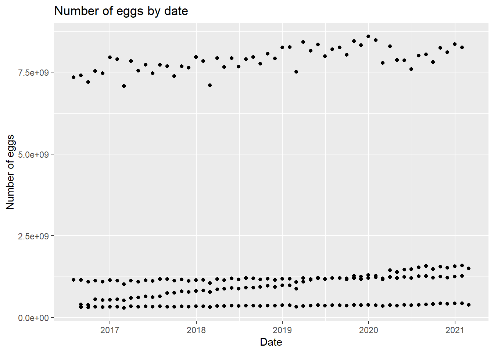
We can see there seems to be a trend based on some subtype based on the four clear linear trends in the graph. Let’s adjust the graph a little bit.
eggplot2 <- ggplot(eggprod, aes(observed_month, log(n_eggs)))+ #log scale the eggs to better see the data
geom_point(aes(color = prod_process))+ #color the data by production process
labs(title = "Number of eggs by date", x = "Date", y = "Log number of eggs")
eggplot2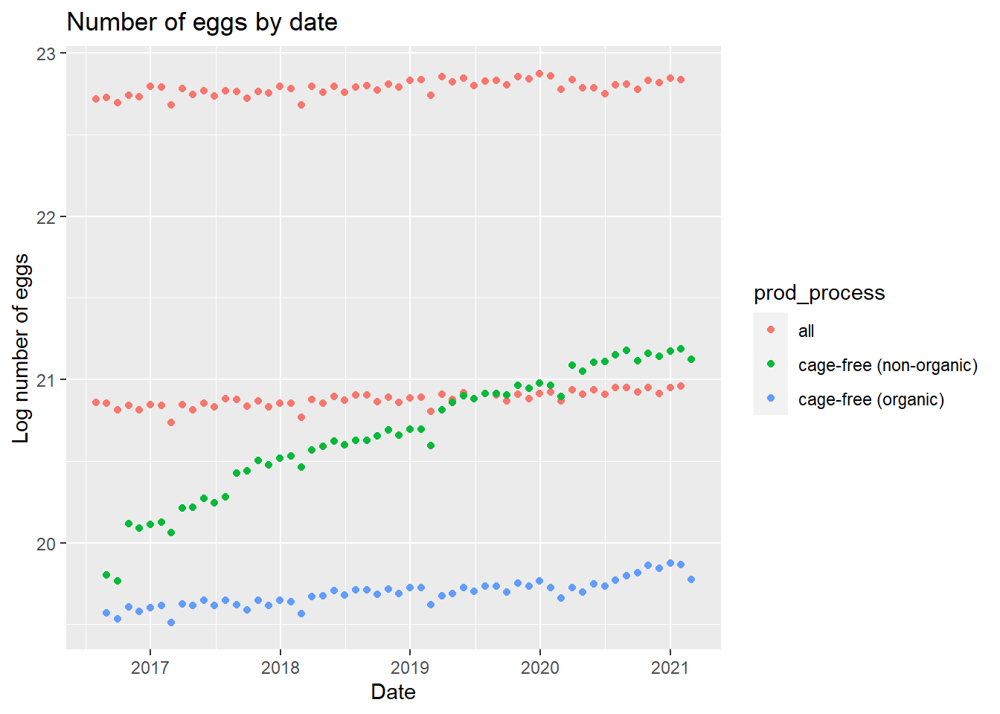
There is a trend based on cage-free vs table eggs and organic vs non-organic. We can look at a similar plot using the number of hens.
#plot number of hens by date
henplot <- ggplot(eggprod, aes(observed_month, log(n_hens)))+ #log scale of hens
geom_point(aes(color = prod_process))+ #color the data by production process
labs(title = "Number of hens by date", x = "Date", y = "Log number of hens")
henplot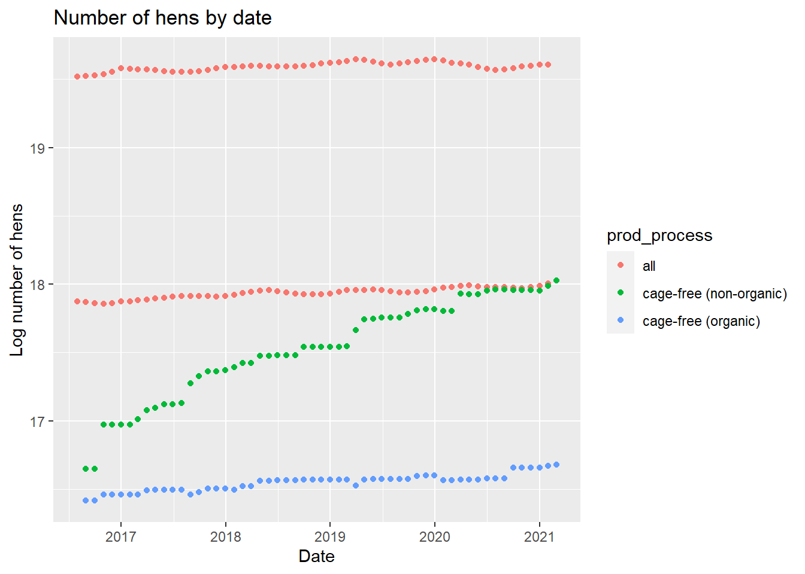
The same trends from the egg plot appear in the hen plot which would make sense as the same category of hens are producing the category of eggs. We can also look at the cage-free percentage by date.
cageplot <- ggplot(cagefreeperct)+
geom_point(aes(observed_month, percent_eggs), color = "red")+ #creates scatter plot of %eggs in red
geom_point(aes(observed_month, percent_hens), color = "darkgreen")+ #creates scatter plot of %hens in green
labs(title = "Number of cage-free eggs and hens by date", x= "Date", y= "Percentage")
cageplotWarning: Removed 42 rows containing missing values (`geom_point()`).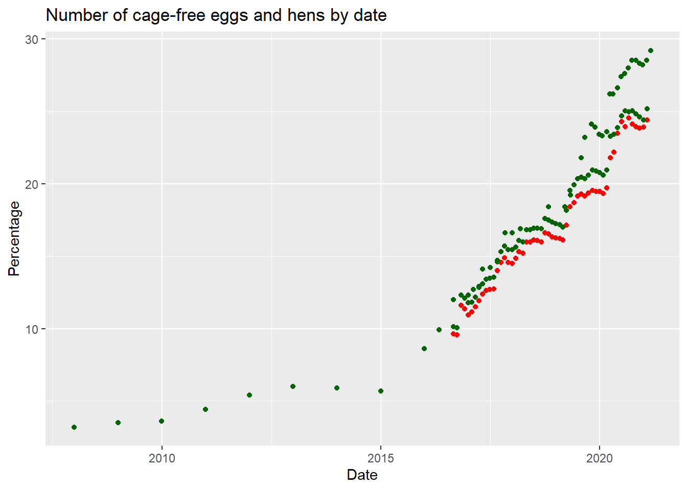
Here, we can see the percentage of cage-free hens and eggs have increased since 2015.
Wrangle data
Now that we have a general idea about the data, we can wrangle and clean the data. First, I would be interested in looking at the average eggs per hen between cage-free and non-cage-free hens. We will use the mutate() function to make a new variable.
eggprod <- eggprod %>% mutate(egg_production = n_eggs/n_hens)
summary(eggprod) observed_month prod_type prod_process n_hens
Min. :2016-07-31 Length:220 Length:220 Min. : 13500000
1st Qu.:2017-09-30 Class :character Class :character 1st Qu.: 17284500
Median :2018-11-15 Mode :character Mode :character Median : 59939500
Mean :2018-11-14 Mean :110839873
3rd Qu.:2019-12-31 3rd Qu.:125539250
Max. :2021-02-28 Max. :341166000
n_eggs source egg_production
Min. :2.981e+08 Length:220 Min. :17.03
1st Qu.:4.240e+08 Class :character 1st Qu.:20.66
Median :1.155e+09 Mode :character Median :23.25
Mean :2.607e+09 Mean :22.43
3rd Qu.:2.963e+09 3rd Qu.:24.03
Max. :8.601e+09 Max. :25.56 Now we have the average number of eggs per hen which varies between 17 to 25 eggs per month.
Research question
After looking at the data, the main research questions I want to look at is: 1) Do the cage-free and non-cage-free hens produce the same number of eggs on average? Is the average number of eggs produced by a hen expected to change over time?
The main outcome will be egg_production and the main predictors will be prod_type, prod_process, and the observed_month. We will go ahead and remove the source column from the data set due to the issues the column causes in the models.
#remove source column
eggprod <- eggprod %>% select(-source)Split data
#establish reproducibility by setting the seed
set.seed(424)
#stratify data split
data_split <- initial_split(eggprod, prop = 3/4)
#create two data sets with 3/4 of data in training set
train_egg <- training(data_split)
test_egg <- testing(data_split)Null Model
First, we need to determine the performance of the null model which does not have any predictor variables. This will simple predict the mean egg production using the outcome values.
#set null model using null_model() function
nullmod <- null_model() %>%
set_engine("parsnip") %>%
set_mode("regression")
#create null recipe
null_rec <- recipe(egg_production ~ ., data = train_egg)%>%
step_date(observed_month) %>% #changes date column into nominal
step_rm(observed_month) %>% #removes original date column
step_dummy(all_nominal_predictors()) #creates dummy variables for predictors
#create null workflow
nullmodwf <- workflow() %>%
add_model(nullmod) %>%
add_recipe(null_rec)
#fit the null model to training data
nullmodfit <- nullmodwf %>%
fit(data = train_egg)We have fit the model to the training data. Since this is a regression (the outcome is continuous), the rmse() function will produce the metric for this model.
#use null model to make predictions from training data
nullmod_predtrain <- augment(nullmodfit, train_egg) %>%
rmse(truth = egg_production, .pred) %>%
mutate(model = "Null")
nullmod_predtrain# A tibble: 1 × 4
.metric .estimator .estimate model
<chr> <chr> <dbl> <chr>
1 rmse standard 2.08 Null This prediction model based on the training data has an RMSE of 2.078. We can also make predictions using the testing data in order to see how the model performs on “new” data.
#use null model to make predictions from test data
nullmod_predtest <-augment(nullmodfit, test_egg) %>%
rmse(egg_production, .pred) %>%
mutate(model = "Null")
nullmod_predtest# A tibble: 1 × 4
.metric .estimator .estimate model
<chr> <chr> <dbl> <chr>
1 rmse standard 2.49 Null The test null model performs slightly worse than the training data with a RMSE of 2.485.
4 models
Using the null model as the baseline, we can create 4 different models to compare the performance on the training data. To set this up, we can make the cross-validation folds and recipe that will be used in all four models. The four models we will explore are LASSO (linear regression), random forest model, decision tree model, and boosted tree model.
#set seed for reproducibility
set.seed(424)
#create cross-validation folds
folds <- vfold_cv(train_egg, v = 5)
#create basic recipe that will be used in all models
#step_ functions create dummy variables
ml_rec <- recipe(egg_production ~., data = train_egg) %>%
step_date(observed_month) %>% #changes date column into nominal
step_rm(observed_month) %>% #removes original date column
step_dummy(all_nominal_predictors()) #creates dummy variables for predictorsLinear Regression (LASSO)
Starting with the LASSO model, we will create our regression model with the identified tuning parameters and the model workflow.
#set LASSO regression model with tuning parameters based on engine specs
lr_mod <- linear_reg(penalty = tune(), #penalty given for number of predictors
mixture = 1) %>%
set_engine("glmnet") %>%
set_mode("regression")
#create workflow using model and recipe
lr_wf <- workflow() %>%
add_model(lr_mod) %>%
add_recipe(ml_rec)Then set up a grid of the tuned parameters that will be used for cross-validation.
#set up tuning grid of parameters for cross validation
lr_grid <- tibble(penalty = 10^seq(-4, -1, length.out = 30)) #creates a grid of penalty values to tune
#tune parameters using cross-validation folds
set.seed(424)
lr_res <- lr_wf %>%
tune_grid(
resamples = folds,
grid = lr_grid,
control = control_grid(save_pred = TRUE) #saves the predictions for later
)Warning: package 'glmnet' was built under R version 4.2.3Warning: package 'Matrix' was built under R version 4.2.2We can plot the models using autoplot() which plots the tuning parameters by RMSE value.
lr_res %>%
autoplot()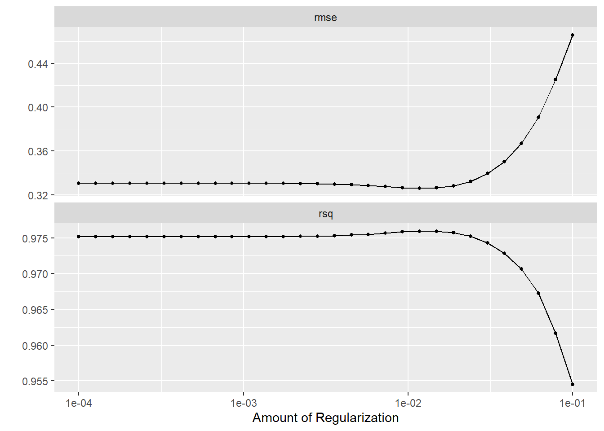
The goal is to have a low RMSE value which not overfitting the model with too many predictors.
Next, we will select the best model, set up the final workflow, and refit the model to the training data. From there, we will pull the RMSE of the fitted model.
#select best LASSO model
best_lr <- lr_res %>% select_best("rmse")
best_lr# A tibble: 1 × 2
penalty .config
<dbl> <chr>
1 0.0117 Preprocessor1_Model21#summary of best model to be used for later comparison
compare_lr <- lr_res %>%
show_best("rmse", n=1) %>%
select(c(.metric, mean, std_err)) %>%
mutate(model = "Linear Regression (LASSO)")
#set up workflow
lrfinal_wf <- lr_wf %>%
finalize_workflow(best_lr)
#fit the final model
lrfinal_fit <- lrfinal_wf %>%
fit(train_egg)
#extract RMSE value
lrfinalfitted <- augment(lrfinal_fit, train_egg)
lrfinalfitted_rmse <- lrfinalfitted %>%
select(egg_production, .pred) %>%
rmse(truth = egg_production, .pred) %>%
mutate(model = "Linear Regression (LASSO)")
lrfinalfitted_rmse# A tibble: 1 × 4
.metric .estimator .estimate model
<chr> <chr> <dbl> <chr>
1 rmse standard 0.294 Linear Regression (LASSO)The best fitted LASSO model has a penalty value of 0.0117 and an RMSE of 0.294.
In addition to the RMSE value, we can also visualize model performance by looking at the residual plot. The residual plot should not have any identifiable patterns.
#creates residual variable from outcome and prediction values
lrfinalfitted <- lrfinalfitted %>%
mutate(.resid = egg_production - .pred)
#create residual plot
lr_residplot <- lrfinalfitted %>% ggplot(aes(.pred, .resid))+
geom_point()+
geom_hline(yintercept = 0)+
labs(title = "Linear Regression Model")
lr_residplot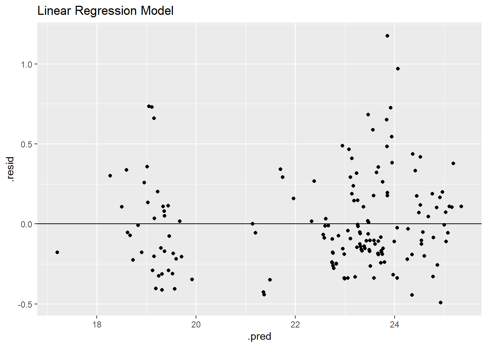
The residual plot shows two clear groupings around predictions of ~19 and ~23.5 eggs per hen.
Random Forest model
The next model we will test is the random forest model. Start with setting up the model and workflow.
#detect your computers cores since rf models use parallel processing
cores <- parallel::detectCores()
#set random forest model
rf_mod <- rand_forest(mtry = tune(), #parameter to tune based on engine
min_n = tune(),
trees = 1000) %>%
set_engine("ranger", num.threads = cores) %>% #number of threads for processing
set_mode("regression")
#set workflow
rf_wf <- workflow() %>%
add_model(rf_mod) %>%
add_recipe(ml_rec)Then we can tune the parameters of the model. The random forest does not use a separate grid_regular function.
#tune parameters using cross-validation folds
set.seed(424)
rf_res <- rf_wf %>%
tune_grid(folds,
grid = 25, #25 models within the grid
control = control_grid(save_pred = TRUE), #save model predictions
metrics = metric_set(rmse)) #establishes metric of modeli Creating pre-processing data to finalize unknown parameter: mtryWarning: package 'ranger' was built under R version 4.2.2Autoplotting shows the RMSE of the models based on various tuning parameter estimates.
rf_res %>%
autoplot()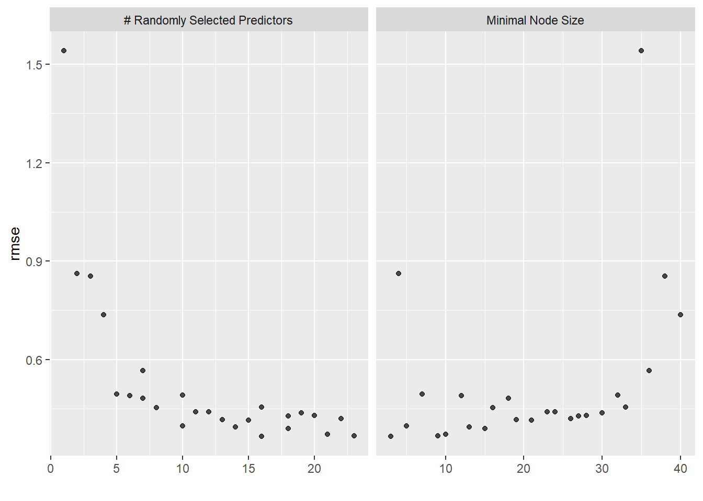
Then we can select the best model, finalize the workflow, and fit the model to the training data. The RMSE from the fitted model is displayed as well.
#select best random forest model
best_rf <- rf_res %>% select_best("rmse")
best_rf# A tibble: 1 × 3
mtry min_n .config
<int> <int> <chr>
1 16 3 Preprocessor1_Model09#summary of best model to be used for later comparison
compare_rf <- rf_res %>%
show_best("rmse", n=1) %>%
select(c(.metric, mean, std_err)) %>%
mutate(model = "Random Forest")
#set up workflow
rffinal_wf <- rf_wf %>%
finalize_workflow(best_rf)
#fit the final model
rffinal_fit <- rffinal_wf %>%
fit(train_egg)
#extract RMSE value
rffinalfitted<- augment(rffinal_fit, train_egg)
rffinalfitted_rmse <- rffinalfitted%>%
select(egg_production, .pred) %>%
rmse(truth = egg_production, .pred)%>%
mutate(model = "Random Forest")
rffinalfitted_rmse# A tibble: 1 × 4
.metric .estimator .estimate model
<chr> <chr> <dbl> <chr>
1 rmse standard 0.134 Random ForestThe best random forest model has a mtry of 16, a minimum node size of 3, and a RMSE of 0.138.
We can once again look at the residual plot to better observe model performance.
#create
rffinalfitted <- rffinalfitted %>%
mutate(.resid = egg_production - .pred)
rf_residplot <- rffinalfitted %>% ggplot(aes(.pred, .resid))+
geom_point()+
geom_hline(yintercept = 0)+
labs(title = "Random Forest Model")
rf_residplot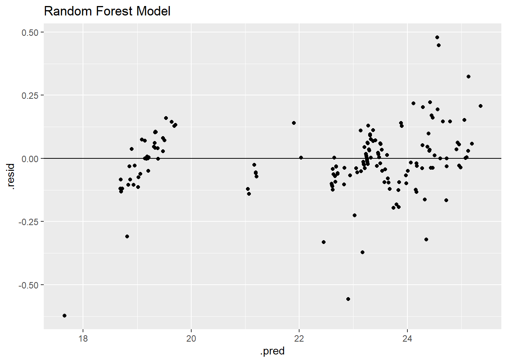
This model also appears to have two clear groupings of data, but these groupings are tighter than the linear regression model.
Decision tree model
Next we will look at the decision tree model. This model partitions data using if/then decisions, so the predictions end up looking like average egg_production of a subset of data based on predictor variables.
We can start by setting up the model and workflow.
#set decision tree model regression
dt_mod <- decision_tree(
min_n = tune(), #tuning parameter based on engine
tree_depth = tune(),
cost_complexity = tune()
) %>%
set_engine("rpart") %>%
set_mode("regression")
#create machine learning workflow
dt_wf <- workflow() %>%
add_model(dt_mod) %>%
add_recipe(ml_rec)Then set up the grid of tuning parameter values and use cross-validation folds to tune the parameters.
#set up tuning grid of parameters for cross validation
dt_grid <- grid_regular(min_n(),
tree_depth(),
cost_complexity())
#tune parameters using cross-validation folds
set.seed(424)
dt_res <- dt_wf %>%
tune_grid(
resamples = folds, #CV folds
grid = dt_grid,
control = control_grid(save_pred = TRUE) #saves predictions
)Autoplotting the models will give an idea of the best performing models based on various values of the tuning parameters.
dt_res %>%
autoplot()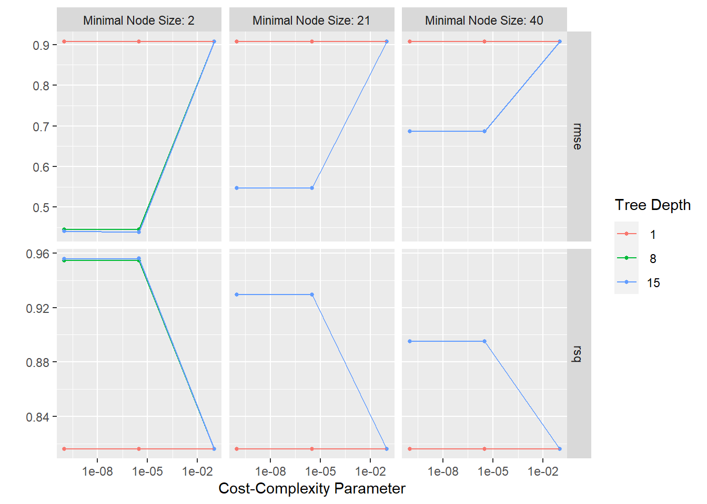
Then we can select the best model, fit the model to the training data, and finalize the workflow. The RMSE will be extracted from the fitted model.
#select best tree model
best_dt <- dt_res %>% select_best("rmse")
best_dt# A tibble: 1 × 4
cost_complexity tree_depth min_n .config
<dbl> <int> <int> <chr>
1 0.00000316 15 2 Preprocessor1_Model16#summary of best model to be used for later comparison
compare_dt <- dt_res %>%
show_best("rmse", n=1) %>%
select(c(.metric, mean, std_err)) %>%
mutate(model = "Decision Tree")
#set up workflow
dtfinal_wf <- dt_wf %>%
finalize_workflow(best_dt)
#fit the final model
dtfinal_fit <- dtfinal_wf %>%
fit(train_egg)
#extract RMSE value
dtfinalfitted <- augment(dtfinal_fit, train_egg)
dtfinalfitted_rmse <- dtfinalfitted%>%
select(egg_production, .pred) %>%
rmse(truth = egg_production, .pred)%>%
mutate(model = "Decision Tree")
dtfinalfitted_rmse# A tibble: 1 × 4
.metric .estimator .estimate model
<chr> <chr> <dbl> <chr>
1 rmse standard 0.0190 Decision TreeThe best performing decision tree model has a cost complexity value of 3.162278e-06, tree_depth of 15, and a mininum node size of 2. The RMSE is 0.019.
The residuals can also be plotted to visualize model performance.
#create residuals from predictions and outcome values
dtfinalfitted <- dtfinalfitted %>%
mutate(.resid = egg_production - .pred)
#plot residuals and predictions
dt_residplot <- dtfinalfitted %>% ggplot(aes(.pred, .resid))+
geom_point()+
geom_hline(yintercept = 0)+
labs(title = "Decision Tree Model")
dt_residplot
The residual plot has a similar pattern to the other models with two identifiable groupings; however, due to the nature of the model engine, the residuals tend to line up into smaller groups as well which is shown by the grouping on the horizontal zero line.
Boosted tree model
Finally, we will look into a boosted tree model using the lightgbm engine.
#set boosted tree regression model
bt_mod <- boost_tree(tree_depth = tune(), #tuning parameters from engine specs
trees = tune(),
min_n = tune()) %>%
set_engine("lightgbm") %>%
set_mode("regression")
#create boosted tree workflow
bt_wf <- workflow() %>%
add_model(bt_mod) %>%
add_recipe(ml_rec)Then we will set up the tuning grid and resample the training data using the cross-validation folds. The cross-validation resampling will take a while to run and produces 9 models for each fold (3 options for the 3 tuning parameters).
#set up tuning grid of parameters for cross validation
bt_grid <- grid_regular(tree_depth(),
trees(),
min_n())
#tune parameters using cross-validation folds
set.seed(424)
bt_res <- bt_wf %>%
tune_grid(
resamples = folds,
grid = bt_grid,
control = control_grid(save_pred = TRUE)
)Warning: package 'lightgbm' was built under R version 4.2.3Autoplotting the models visually shows the best models based on lowest RMSE.
bt_res %>%
autoplot()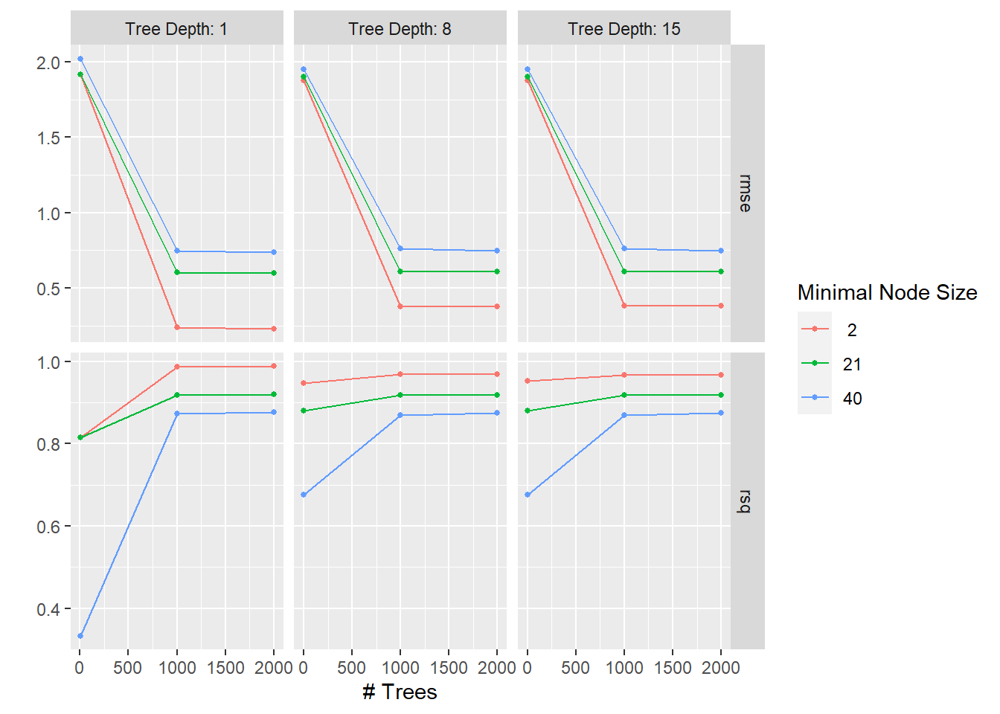
Then we can select the best model, finalize the workflow, and fit the best model to the training data. We can again extract the RMSE value from the fitted model.
#select best tree model
best_bt <- bt_res %>% select_best("rmse")
best_bt# A tibble: 1 × 4
trees min_n tree_depth .config
<int> <int> <int> <chr>
1 2000 2 1 Preprocessor1_Model03#summary of best model to be used for later comparison
compare_bt <- bt_res %>%
show_best("rmse", n=1) %>%
select(c(.metric, mean, std_err)) %>%
mutate(model = "Boosted Tree")
#set up workflow
btfinal_wf <- bt_wf %>%
finalize_workflow(best_bt)
#fit the final model
btfinal_fit <- btfinal_wf %>%
fit(train_egg)
#extract RMSE value
btfinalfitted <- augment(btfinal_fit, train_egg)
btfinalfitted_rmse <- btfinalfitted %>%
select(egg_production, .pred) %>%
rmse(truth = egg_production, .pred)%>%
mutate(model = "Boosted Tree")
btfinalfitted_rmse# A tibble: 1 × 4
.metric .estimator .estimate model
<chr> <chr> <dbl> <chr>
1 rmse standard 0.139 Boosted TreeThe best boosted tree model has 2000 trees, minimal node size of 2, and a tree depth of 1, which produces a RMSE of 0.104.
Using the same method, plot the residuals from the model.
#create residuals from predictions and outcome values
btfinalfitted <- btfinalfitted %>%
mutate(.resid = egg_production - .pred)
#plot residuals and predictions
bt_residplot <- btfinalfitted %>% ggplot(aes(.pred, .resid))+
geom_point()+
geom_hline(yintercept = 0)+
labs(title = "Boosted Tree Model")
bt_residplot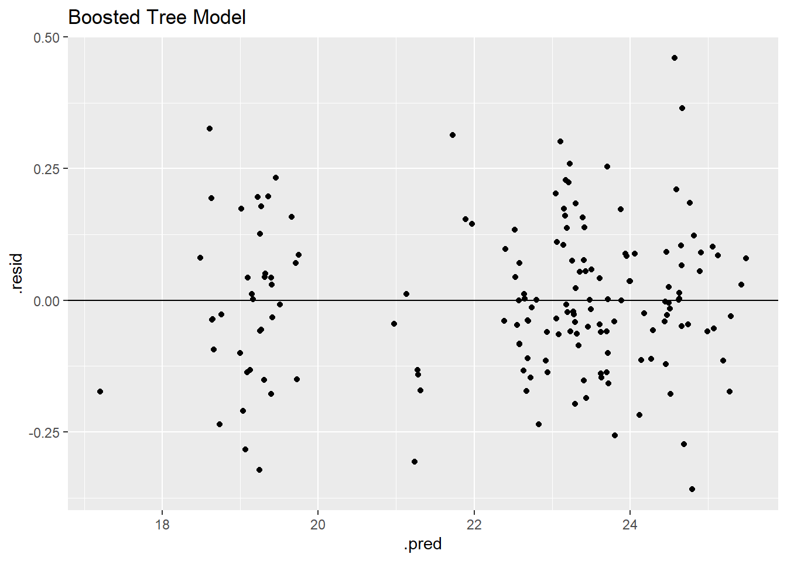
Similar to the other models, the residual model shows two clear groupings in the data.
Compare models and choose best
Now that we have the residual plots and RMSE values for the model, we will compare and choose the best performing model.
compare <- bind_rows(compare_lr, compare_rf, compare_dt, compare_bt)
compare# A tibble: 4 × 4
.metric mean std_err model
<chr> <dbl> <dbl> <chr>
1 rmse 0.326 0.0181 Linear Regression (LASSO)
2 rmse 0.365 0.0251 Random Forest
3 rmse 0.439 0.0262 Decision Tree
4 rmse 0.232 0.0121 Boosted Tree comparefit <- bind_rows(nullmod_predtrain, lrfinalfitted_rmse, rffinalfitted_rmse, dtfinalfitted_rmse, btfinalfitted_rmse)
comparefit# A tibble: 5 × 4
.metric .estimator .estimate model
<chr> <chr> <dbl> <chr>
1 rmse standard 2.08 Null
2 rmse standard 0.294 Linear Regression (LASSO)
3 rmse standard 0.134 Random Forest
4 rmse standard 0.0190 Decision Tree
5 rmse standard 0.139 Boosted Tree All models performed better than the null model. Based on the RMSE values, the linear regression performed the worse of all models. The decision tree model, boosted tree model, and the random forest model have the smallest uncertainty. The boosted tree model has the lowest RMSE estimate. Next, we can look at the residual models to decide between these models.
rf_residplotdt_residplot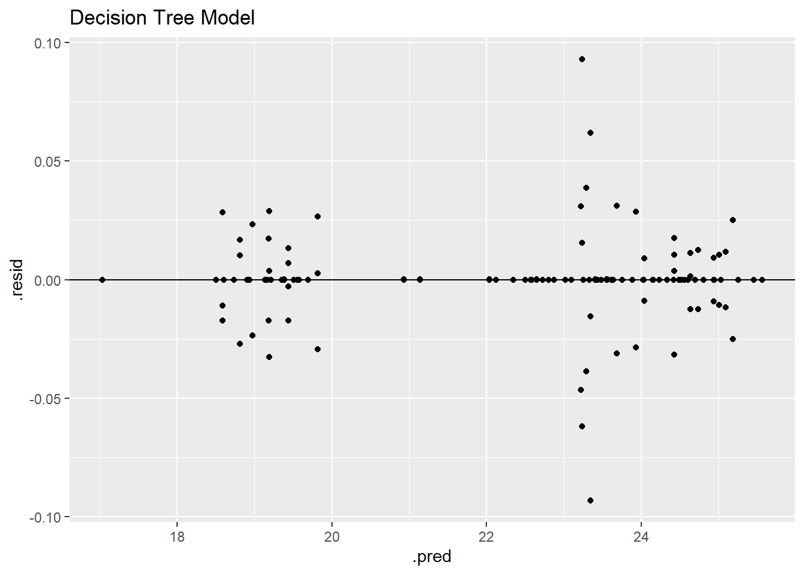
bt_residplotThe decision tree model has by far the lowest residuals as shown through the grouping on the horizontal zero line and low residual values. The residual plot and RMSE value identify the decision tree as the best model.
Final fit using the test data
Using the decision tree model, we can evaluate model performance one final time on the test data. This will act as “new data” to determine how the model would perform on untrained/unfitted data.
#fit final model to test data
dttest_fit <- dtfinal_wf %>%
last_fit(data_split) #uses best model on test data
#collect RMSE from final model
dttest_fit %>% collect_metrics()# A tibble: 2 × 4
.metric .estimator .estimate .config
<chr> <chr> <dbl> <chr>
1 rmse standard 0.430 Preprocessor1_Model1
2 rsq standard 0.975 Preprocessor1_Model1nullmod_predtest# A tibble: 1 × 4
.metric .estimator .estimate model
<chr> <chr> <dbl> <chr>
1 rmse standard 2.49 Null The boosted tree model performed better than the null model on the test data. The model performed worse on the test data compared to the training data (0.01900938 vs 0.4304961), but this is to be expected. In addition, we can plot the prediction and residual plots for the test data.
#create predictions and residuals for test data
dttest_resd <- augment(dttest_fit) %>%
select(c(.pred, egg_production)) %>%
mutate(.resid = egg_production - .pred)#plots LASSO predictions and body temperature for test data
dttest_plotp <- ggplot(dttest_resd)+
geom_point(aes(egg_production, .pred))+
geom_abline(slope = 1, yintercept = 17)Warning in geom_abline(slope = 1, yintercept = 17): Ignoring unknown parameters:
`yintercept`dttest_plotp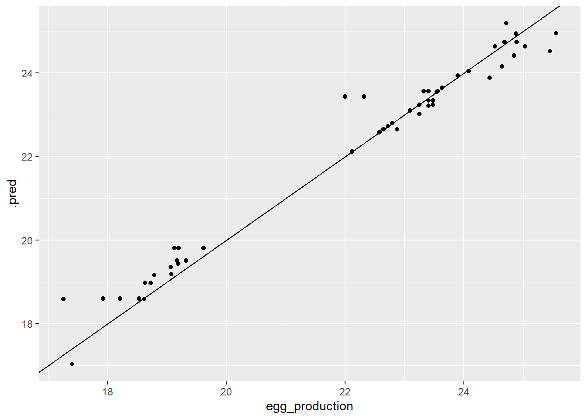
Once again, we can see the two groupings in data. But, the goal of the prediction plot is to have the points lie on a diagonal line, so it looks good so far! Next, looking at the residual plot.
#plots residuals and egg production for test data
dttest_plotr <- ggplot(dttest_resd)+
geom_point(aes(egg_production,.resid))+
geom_hline(yintercept = 0)
dttest_plotr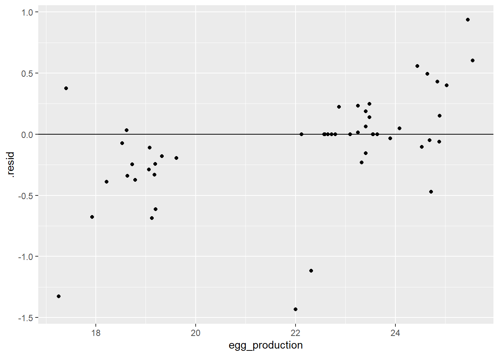
The residual plot appears more spread out compared to the test data, but most of the data is grouped around the horizontal zero line. The left grouping seems to consistently have negative residual values while the opposite is true for the higher values.
Discussion
As a summary, the exercise used cross-validation to tune 4 models attempting to prediction the outcome (egg_production) from three predictors (prod_type, prod_process, and observed_month). The four models (linear regression using LASSO, random forest, decision tree, and boosted tree model) all performed better than the null model (RMSE = 2.0786768) and had RMSE values ranging from 0.01900938 (Decision Tree) to 0.29370228 (Linear Regression). Due to the small residual values, low RMSE value, and no abnormal data patterns (compared to the other model plots), I choose the decision tree model for the final fit on the test data. The decision tree model on the test data had a RMSE of 0.4304961 and an R^2 of 0.97. These measure show a high performing model on the new data. However, both the RMSE value and residual plot show a worse performing model compared to using the training data.